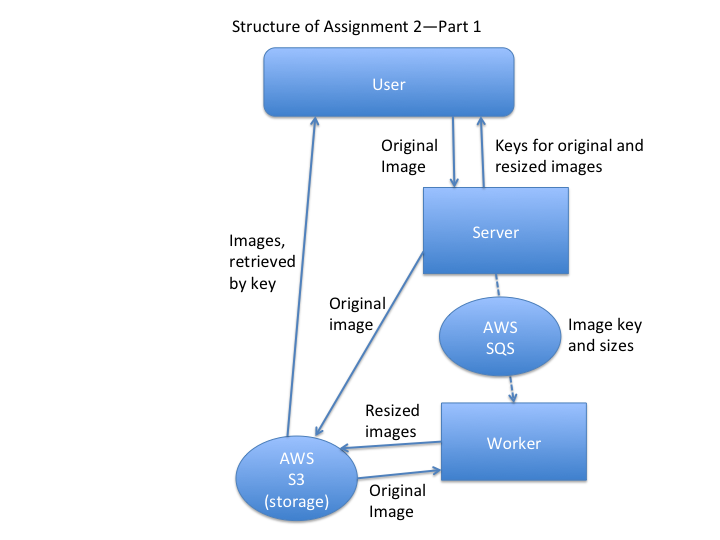
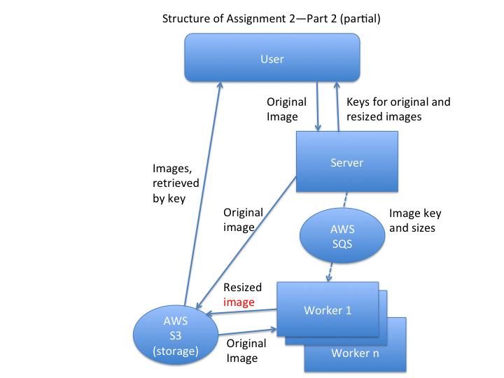
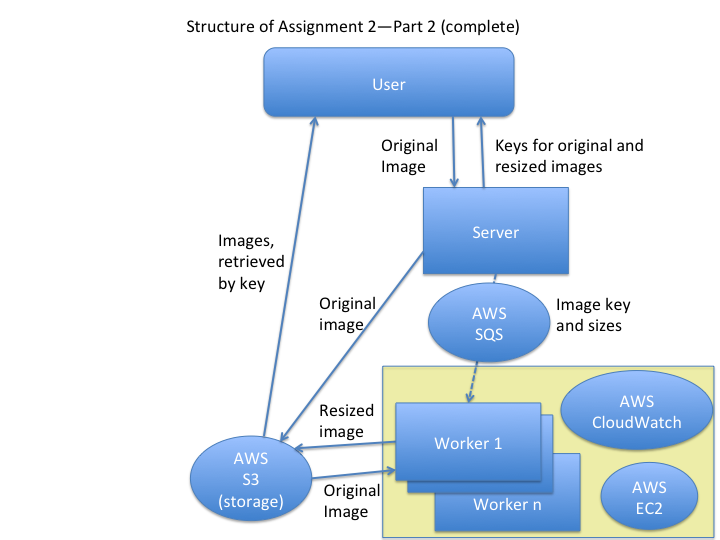

In the first part of Assignment 2, you are going to build a service, comprising two subservices connected by an SQS queue:

In the second part, you are going to make the system scalable by partitioning the image resizing step across multiple workers:

How many workers is enough? As the number of image resizes grows, you’ll need more workers. To make it scalable, you will need to automatically provision more workers (EC2 instances):

Complete The Tail at Scale, from “Cross-request long-term adaptations” to end.
You might also consider rereading the sections on “Hedged requests” and “Tied requests”.
Key points to look for: